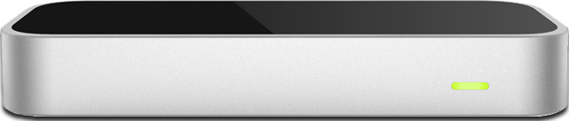

Po + Mishra
January 30, 2014
-> type
// Fires approximately approximately sixty times a second
// Returns a FRAME instance
Leap.loop({enableGestures: true},function(FRAME) {
// Get the number of hands (FRAME.hands is an array)
var hands = FRAME.hands.length;
// Get a gesture (FRAME.gestures is an array)
var gesture = FRAME.gestures[ {gesture:id} ];
// Check if a gesture was a key tap
if( gesture.type == 'keyTap' ){
// do some cool stuff here
}
});